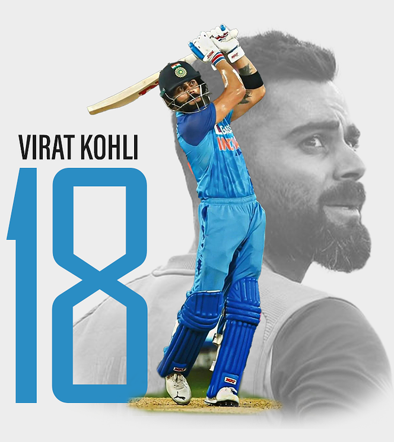
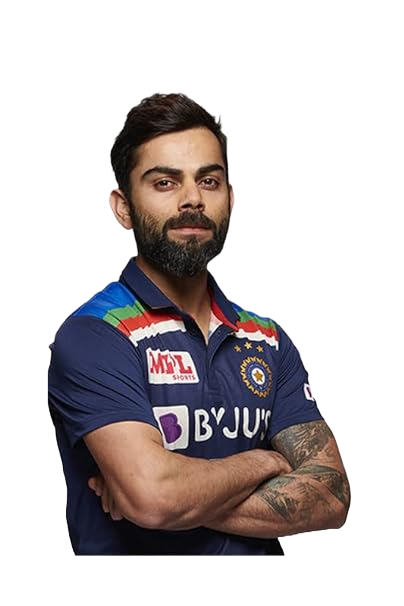
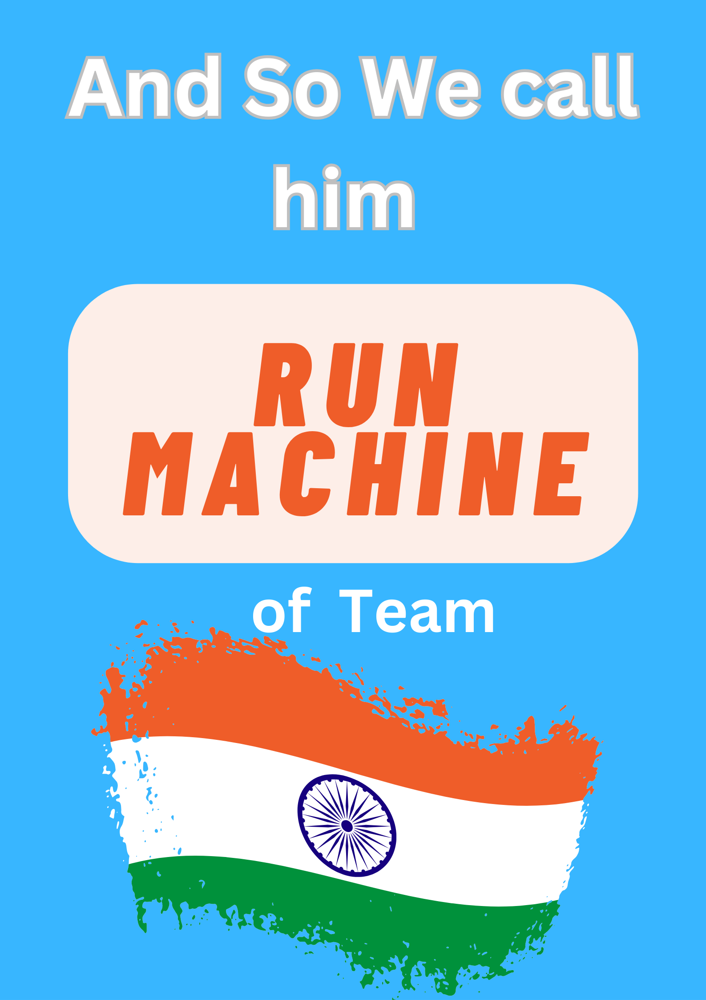
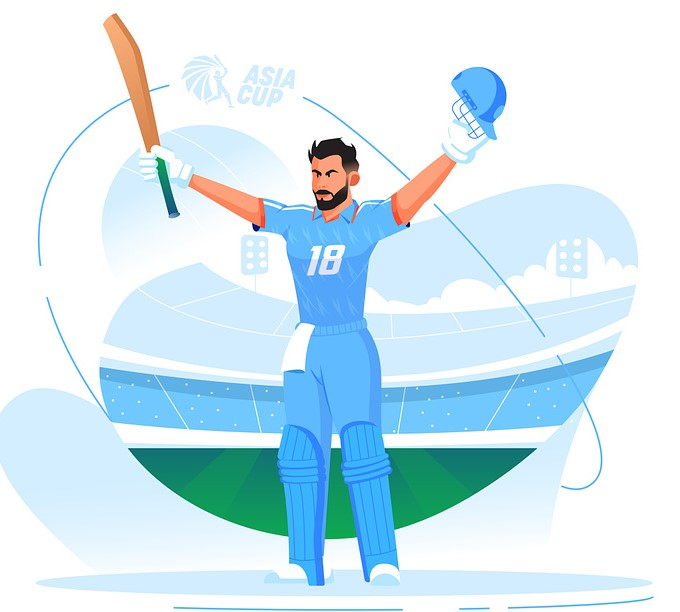

Career
Stats
Records
Awards
Fun Facts
"self belief"
&
"hard work"
will always earn you
success

Cricket Career
1998
Started Training at West Delhi Cricket Academy
2002-03
Played for Delhi under-15 team and become highest run scorer in polly umrigar trophy
2003-05
Selected for Delhi under-17 team for Vijay merchant Trophy
2006
List-A Match Debut in Ranji Trophy scored 90+ after his fathers demise Selected in under-19 team
2008
Became U-19 World-cup team captain, lifted the U-19 world cup for team India
2011
World Cup Indian Team debut. First debut Indian batsman to score century against Bangladesh
2017
Indian team captain against all formats First ever batsman to hit six double hundreds as the captain.
2018
Rank 1 in ICC Test Ranking. Fastest player to score 10000 ODI runs.
2023
Broke Sachin Tendulkar's record by hitting his 50th century in ODI cricket

Virat
Stats of king kohli...
Matches
522
Innings
580
Total Runs
26733
High Score
254*
Strike Rate
5412
100s
80
50s
139
4s
26464
6s
294
Virat
Records
1st
Most runs in career (4037) in T20i records
1st
Most player-of-the-series awards (21) in Combined Test, ODI and T20I records
2nd
Most hundreds in a career (80) and in a calendar year (11) which is just after the GOD of cricket Sachin Tendulkar
3rd
Most runs in a calendar year (2818) in Combined Test, ODI and T20I records
4th
Most runs in career (26733) in Combined Test, ODI and T20I records
5th
Most fours in career (2646) in Combined Test, ODI and T20I records

Awards
Padma Shree (2017)
Sir Garfield Sobers Trophy (2018)
ICC Male Cricketer of the Decade (2019)

Arjuna Award for Cricket (2013)
Major Dhyan Chand Khel Ratna Award for Cricket (2018)
Wisden Leading Cricketer in the World (2018 , 2017)
Only Bowler in T20i cricket cricket to take a wicket on zeroth delivery.
Only Indian player to score a century in his 50 over World Cup debut.
Virat Kohli was the only player in IPL to never be auctioned .
The lesser known Business Man Kohli He owns Fashion Brand Wrogn,Start up ' Sport - Convo'
He is the co-owner for FC Goa in ISL, UAE Royals in Tennis , Bengaluru Yodhas in Wrestling.